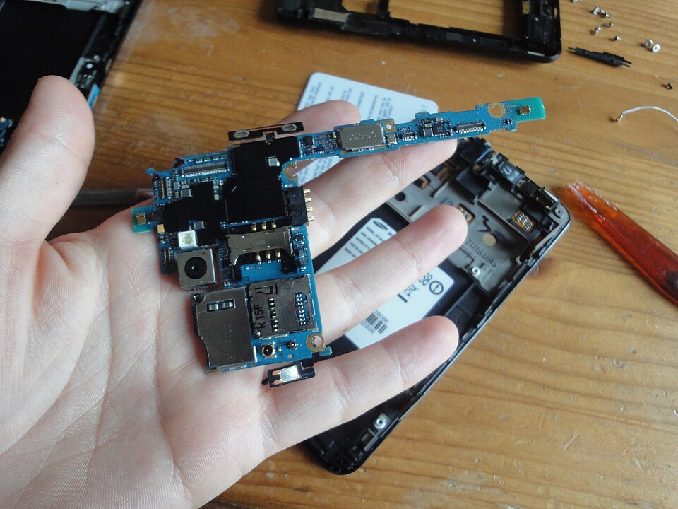
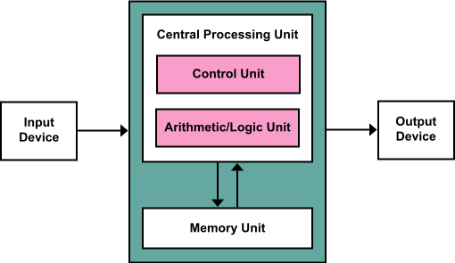
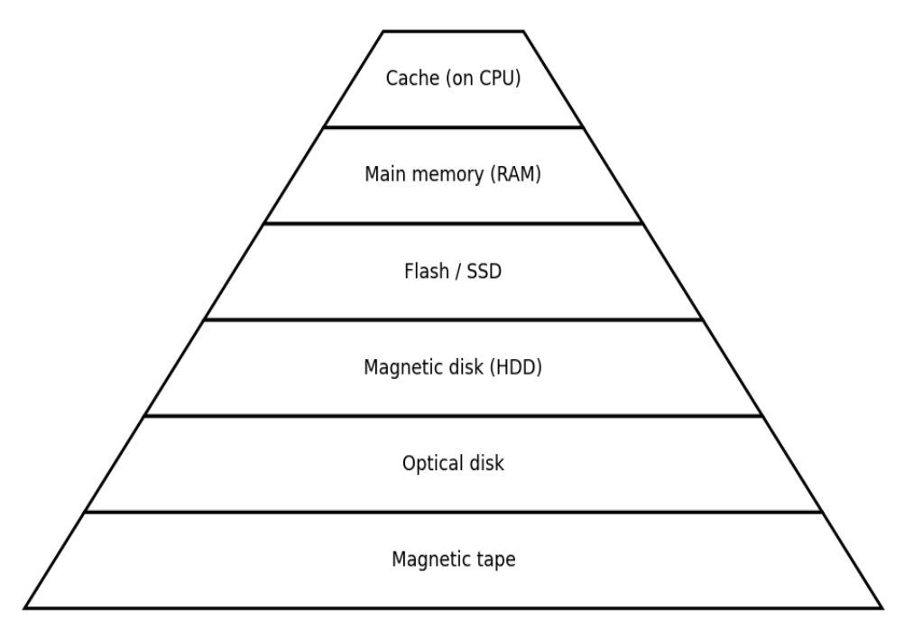

03. Hardware: CPU, GPU, Memory, Storage Devices
Hardware
Hardware refers to the physical components of a computer system, the parts you can see and touch. It includes all electronic and mechanical elements that work together to input, process, store, and output data.
The motherboard is the main circuit board and backbone of the computer, responsible for connecting and coordinating all hardware components. It provides electrical pathways (called buses) and controllers that allow the Central Processing Unit (CPU), memory, storage devices, input components (e.g. keyboard, mouse, microphone, scanner), and output components (e.g. monitor, printer, speaker) to communicate quickly and in the correct sequence. The motherboard ensures that data flows smoothly between these parts, much like a central highway system linking different parts of a city. The CPU socket is the slot where the processor is installed; through tiny metal contacts, it connects directly to the motherboard so the CPU can fetch, decode, and execute instructions from memory. Beside it are the memory slots, where Random-Access Memory (RAM) modules are inserted. RAM temporarily holds the data and instructions the CPU is currently working with, allowing fast access and efficient processing.

Note
Imagine you open the calculator app on your computer. When you click the icon, the action is sent through the motherboard. The calculator program is loaded into RAM, and the CPU begins reading its instructions from memory and carrying them out. When you type numbers, they are kept in RAM while the CPU performs the calculations. The result is then shown on the screen. If you close the app, the data in RAM is cleared, but the calculator program itself remains stored in a storage device for future use.
Von Neumann Architecture
The von Neumann architecture (1945) describes how most computers are structured. It consists of five key components. The input unit receives data and instructions from external devices. The memory unit stores data and instructions, either temporarily during processing or permanently for long-term use. The arithmetic logic unit performs arithmetic operations, such as addition and subtraction, as well as logical operations. The control unit directs and coordinates all system activities by controlling the flow of data and instructions between components. Finally, the output unit presents the processed information to the user or transmits it to other systems through output devices or communication interfaces.

Both data and instructions are stored together in the same memory. This is called the stored-program concept. It was important because it allowed computers to keep programs in memory along with the data they use. This made it possible to change or run different programs by loading new instructions into memory, instead of manually changing the computer’s hardware connections. It simplified computer design, enabled automation of complex tasks, and made programming far more flexible.
This seems obvious today, but only because it became the foundation of modern computing. Before the stored-program concept, computers like ENIAC had to be rewired by hand for every new task. There was no “program” to load—the hardware was the program. John von Neumann’s idea separated hardware (the machine) from software (the instructions it runs) and treated code as just another form of data. That shift made general-purpose computers possible.
Note
When you use a calculator app to add two numbers, both the program’s instructions (load number, add, display result) and the numbers you enter are stored in RAM. The CPU retrieves and executes the instructions one by one, reads the data from memory, performs the addition, and writes the result back, following the stored-program model.
Central Processing Unit
Central Processing Unit (CPU) follows program instructions and performs the steps needed to complete tasks, from typing a word to playing music. The CPU also controls and coordinates the work of other parts of the computer, making sure everything happens in the right order. It has three main components.

Control Unit (CU) manages and directs activities inside the CPU. It tells the computer when to fetch data, when to carry out an instruction, and where to send results. You can think of it as the traffic controller of the CPU.
Arithmetic Logic Unit (ALU) performs arithmetic operations (addition, subtraction, multiplication, division) and logical operations (comparisons such as equal to, greater than, AND, OR, NOT). When the CPU executes an instruction like add 2 + 3, the CU sends the task to the ALU. The ALU performs the calculation and sends the result back to registers or memory.
Registers are tiny, high-speed memory locations built directly into the CPU. They store data and instructions temporarily during processing. Because they are inside the CPU, registers are much faster than RAM. Examples include:
- Instruction Register (IR) holds the current instruction being executed.
- Program Counter (PC) keeps track of the next instruction’s address in memory.
- Accumulator (ACC) stores intermediate arithmetic and logic results.
Every action the CPU performs follows four main steps, known as the machine cycle:
- Fetch. CPU gets an instruction from RAM.
- Decode. CPU determines what the instruction means.
- Execute. CPU carries out the action (the ALU does the work).
- Store. CPU saves the result back to memory or sends it to an output device.
This process (fetch → decode → execute → store) repeats continuously, millions or billions of times per second.
Note
When a computer adds two numbers, several CPU components work together. First, the CU fetches the instruction from main memory (the binary code telling the CPU what to do). Then it decodes the instruction and identifies which data to use. After decoding, the CU sends control signals that tell the ALU to perform the operation and tell the registers when to load or output data.
The ALU performs the actual arithmetic (e.g. addition) or logical operations. It receives the two numbers from the registers, adds them in binary form, and produces the result. Meanwhile, the registers act as small, extremely fast storage locations inside the CPU. Before the ALU starts, the numbers to be added are placed in registers. After the ALU finishes, the result is stored in another register, ready to be sent back to main memory or used for the next operation.
Throughout the process, the CU ensures proper timing and order, making sure that data moves only when it should and that all components work in sync. This precise coordination - fetching, decoding, executing, and storing - is what allows even the simplest task, such as adding two numbers, to happen billions of times per second without error.
The clock is the timing system of the CPU. It sends out a steady stream of electrical pulses that set the pace for operations. The clock speed indicates how many cycles occur per second and is measured in Hertz (Hz). For example, a CPU with a 3.0 GHz clock runs about 3 billion cycles per second. A cycle is not the same as an instruction; modern CPUs may execute multiple instructions per cycle or require multiple cycles per instruction. The clock ensures that all parts of the CPU work together in perfect rhythm.
Word size is the number of bits the CPU can process in one operation. The most common sizes are 32-bit and 64-bit. A 64-bit CPU can handle larger data chunks and can address much more memory than a 32-bit CPU.
Modern CPUs contain multiple cores, meaning multiple processing units inside a single chip. Each core can run instructions independently, allowing parallel processing. A dual-core CPU can run two heavy tasks at once (for example, encoding a video while running a game), while lighter tasks can be managed by time-sharing even on a single core. A quad-core CPU can handle four heavy tasks, and an octa-core CPU can handle eight - ideal for heavy work such as gaming or video editing.
Instruction Set Architecture (ISA) is the built-in language of the CPU. It defines the commands the CPU can understand and execute. The ISA specifies what operations exist and how programs interact with memory and hardware, while the microarchitecture describes how a particular CPU implements and executes those instructions internally. Common examples include x86/x86-64 (Intel, AMD) and ARM (mobile devices and many modern laptops).
Note
Just as people speak different languages, an Intel CPU "speaks" x86 instructions, while a smartphone CPU "speaks" ARM. Programs must be written or compiled in the correct instruction set so the CPU understands them.
Graphics Processing Unit
While the CPU is responsible for general-purpose computation and overall control of the system, modern computers also rely heavily on the Graphics Processing Unit (GPU). A GPU is a specialized processor designed to perform a very large number of simple calculations in parallel. Originally, GPUs were created to handle graphics tasks such as drawing images, rendering 3D scenes, and updating the screen smoothly in video games and graphical applications.
Unlike the CPU, which has a small number of powerful cores optimized for sequential and complex tasks, a GPU contains thousands of smaller, simpler cores optimized for parallel work. This makes GPUs extremely efficient at tasks where the same operation must be applied to many data elements at once, such as processing pixels, vertices, or vectors. For example, when rendering an image, a GPU can compute the color of millions of pixels simultaneously, something a CPU would do much more slowly.
Today, GPUs are important far beyond graphics. They are widely used in scientific computing, simulations, video processing, and especially artificial intelligence and machine learning, where large matrix and vector operations are required. In these cases, the CPU typically prepares tasks and manages control flow, while the GPU performs the heavy numerical computations. Together, the CPU and GPU complement each other: the CPU handles decision-making and coordination, and the GPU provides massive computational throughput for parallel workloads.
Memory Devices
Every computer must store data and instructions so the CPU can use them. The place where this information is kept is called memory. Different kinds of memory serve different purposes - some are very fast but volatile (temporary), while others are slower but non-volatile (permanent). The contents of volatile memory are lost when power is turned off, which is not the case for non-volatile memory.
The classification of computer storage into three main categories is a conventional way of organizing memory types based on their speed, volatility, access patterns, and typical use. Primary storage is volatile memory used directly by the CPU for immediate processing and includes registers, cache memory, and main memory, holding the data and instructions currently being executed. Secondary storage is non-volatile and provides persistent storage for programs and data, which must be loaded into primary memory before use. Tertiary storage is also non-volatile but much slower, mainly used for long-term backups and archives, accessed infrequently and often relying on sequential access, with examples including optical discs1 (e.g. CD/DVD) and magnetic tapes that offer very large capacity at low cost.
Primary Storage
RAM (Random Access Memory) is the computer's main working memory. It temporarily stores data and instructions that the CPU is currently using, allowing quick access for ongoing tasks. RAM is volatile and has two main types: Dynamic RAM (DRAM) and Static RAM (SRAM).
- DRAM stores each bit of data in a tiny capacitor that holds an electrical charge - charged for 1, empty for 0. Because these capacitors leak energy, DRAM must be constantly refreshed to retain data. Its simple design (just one transistor and one capacitor per bit) allows it to hold large amounts of data at a low cost, but this also makes it slower than other memory types. DRAM serves as the main memory in computers, holding the programs and data currently loaded and being used by the CPU, like open browser tabs or a running video, so the CPU can access them quickly.
- SRAM uses flip-flop circuits made of transistors that keep data stable as long as power is on - no refreshing needed. This makes SRAM much faster and more reliable, but also larger and more expensive.
Cache memory is a very small, ultra-fast SRAM built directly inside the CPU. It stores data and instructions that are used often, so the CPU doesn't have to fetch them repeatedly from the slower main memory (RAM). L1 cache is the smallest and fastest, located inside each CPU core. L2 cache is larger and slightly slower, typically dedicated to each core. L3 cache is the largest and slowest cache level, shared among all cores in the processor.
Note
Imagine you're working on a laptop with several browser tabs open - one for email, one for an online document, and one for a video. All of these open tabs and the data they use are stored in DRAM, which holds the programs and information you are currently using so the CPU can access them quickly. When you switch between tabs, the CPU retrieves the required data directly from DRAM. Because DRAM is volatile, all open tabs and unsaved work are lost if power is removed.
At the same time, the CPU relies on much smaller but faster SRAM inside the processor, known as cache memory. The cache stores the most frequently used instructions and small pieces of data needed while those browser tabs are running. For example, when parts of a webpage or video are accessed repeatedly, the CPU keeps them in cache so they can be reused immediately without waiting for DRAM. In this way, DRAM functions like a large work surface holding everything you are working on, while SRAM cache is like the few critical notes kept right at hand for instant access.
Read-Only Memory (ROM)2 is a non-volatile memory. Unlike RAM, it retains data even when power is off. When the computer is turned on, the CPU reads the firmware stored in ROM - known as the BIOS or UEFI, which checks the hardware (e.g. memory, keyboard, and drives) and then loads the operating system into main memory. Historically, ROM was preprogrammed and not easily changed. In modern systems, firmware is stored in flash memory (a type of Electrically Erasable Programmable ROM) and can be updated by the user.
Secondary Storage
Storage devices use two main data-retrieval methods: sequential access and direct (random) access. In sequential access, data is read in a fixed order from the beginning until the desired location is reached, which makes access slower but the system simpler and cheaper to implement. In random access, the device can jump directly to any data location without reading preceding data, resulting in much faster access.
Hard Disk Drive (HDD) stores data using magnetic platters that spin at very high speeds, usually between 5,400 and 7,200 revolutions per minute (RPM). Data is written and read by a tiny magnetic head that moves across the surface of the spinning disks without touching them. Because of its mechanical structure, an HDD can hold a large amount of data - commonly ranging from 1 to over 20 terabytes. However, since the disk and read/write head involve physical movement, they are relatively slow and can wear out over time and are more vulnerable to shocks or drops. The device allows random access.
Solid State Drive (SSD) stores data using flash memory chips and has no moving parts, which makes it much faster and more reliable than traditional hard drives. Data is stored electronically in millions of tiny transistors_,_ similar to the technology used in USB flash drives, but with far faster interfaces and controllers. SSDs provide very fast boot times, quick application loading, and instant file access, which is why they are now the standard in most laptops and modern computers. Since there are no spinning disks or moving heads, SSDs are also silent, lighter, and more resistant to physical shock, making them ideal for portable devices. However, their cost per gigabyte is higher than that of HDDs. SSDs use electronic random access and are much faster than HDDs, which rely on mechanical movement and are slow for random access.

To sum up, the storage hierarchy shows how different types of memory and storage are organized based on speed, cost, and capacity. At the top of the pyramid is cache memory; it is the fastest and most expensive per unit of storage, but also the smallest in size. Cache resides on the CPU chip and provides data almost instantly. Below it is main memory (RAM), which is slightly slower and cheaper, and is used to store data that the CPU is currently working on. Moving further down, flash storage (such as solid-state drives) is non-volatile, meaning it retains data when power is off. It is slower than RAM but much faster than magnetic or optical storage. Next comes magnetic disk storage (hard drives), which provides large capacity at a lower cost, but has slower access due to mechanical movement. Below that are optical discs (such as CDs, DVDs, and Blu-ray), mainly used for media distribution or backups; they are inexpensive but slower and more limited in capacity compared to disks. At the bottom of the pyramid is magnetic tape, which stores massive amounts of data very cheaply but is extremely slow because it relies on sequential access rather than direct access. As you move upward in the hierarchy, speed and cost increase while capacity decreases; as you move downward, capacity increases and cost per bit decreases, but access time becomes slower.
Additional Material
- How do Transistors Build into a CPU? How do Transistors Work?
- How do Hard Disk Drives Work?
- How does Computer Memory Work?
- How Computers Calculate - the ALU: Crash Course Computer Science #5
- How a CPU Works in 100 Seconds
- Von Neumann Architecture - Computerphile
- How do Graphics Cards Work? Exploring GPU Architecture
-
Disk is standard in computer science for magnetic and solid-state storage (hard disk, disk drive). Disc is used for optical media (CD/DVD/Blu-ray discs). ↩
-
ROM is not used as working memory and is best treated separately from primary/secondary/tertiary storage. It stores non-volatile firmware used mainly during system startup rather than data and instructions actively processed by the CPU. ↩